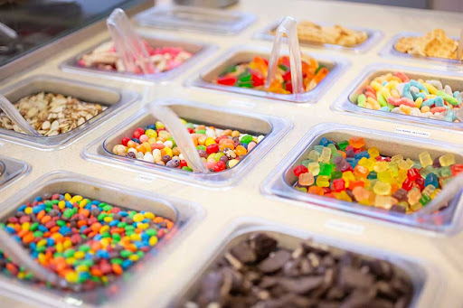
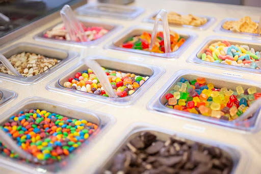

I love frozen yogurt! It's one of my favorite treats! I worked at a shop in Mesa, AZ throughout high school
called "Mesa Frozen Yogurt." They had a BUNCH of tasty flavors! Here are some of my favories:
Frozen yogurt, or "fro-yo," is a chilled dessert made from yogurt, milk, sugar, and flavorings, offering a tangy
alternative to ice cream with often less fat but potentially high sugar, especially with toppings. It's known
for its tart flavor from live cultures and creamy texture, achieved through whipping during freezing, and can
contain beneficial probiotics, but its health profile depends heavily on ingredients and toppings.
Key characteristics
Base: Made with cultured milk, unlike ice cream's cream base, giving it a distinct tartness.
Texture: Whipped during freezing for fluffiness, with added ingredients like corn syrup, cream, or stabilizers
making it smoother.
Health aspects: Contains protein, calcium, and probiotics (good bacteria) that aid digestion, though sugar and
calorie content vary significantly.
Variations: Can be made low-fat, nonfat, sugar-free, vegan, or dairy-free to suit dietary needs.
Serving: Often served self-serve with a wide variety of toppings, which can add significant sugar and calories,
notes Healthline.
How it differs from ice cream
Frozen yogurt (froyo) uses cultured milk for a tangy flavor and lighter feel, while ice cream uses cream,
making it richer and smoother; froyo is often lower in fat/calories but can have more sugar, and ice cream
must meet a minimum 10% milkfat content by FDA rules, giving it a fluffier texture. Key differences are in
dairy base (yogurt vs. cream), texture (tangy/lighter vs. rich/creamy), and nutritional profile (often less
fat in froyo, but check labels for sugar/calories).
Here's some fun info about frozen yogurt:
HEALTH PROFILE:
Frozen yogurt can be a healthier alternative to ice cream, particularly for those wanting to limit fat, as it is
often lower in fat. However, the healthiness depends on the specific product and added ingredients.
Considerations: Choose options that are lower in added sugar and artificial colors to maximize health benefits.
Lactose intolerance: Some people with lactose intolerance may find frozen yogurt easier to digest than regular ice
cream because the fermentation process can lower the lactose content.
PRICING:
Many shops charge by weight, so be mindful of the toppings you add. The cost of the container
itself is usually subtracted before weighing.
Places to get frozen yogurt
SELF-SERVE CHAINS:
Popular self-serve chains like Yogurtland and Menchie's Frozen Yogurt are available in many areas and allow you to
choose your own flavors and toppings.
Local shops: Brooker's Founding Flavors Ice Cream is a local favorite in the Provo area, known for its unique
flavors and high ratings.
Other options: Depending on your location, other businesses like Nielsen's Frozen Custard and Handel's Homemade Ice
Cream also offer frozen yogurt or similar frozen desserts.
DELIVERY:
You can also find frozen yogurt for delivery from places like Baskin-Robbins and Yogurtland through delivery apps
like Grubhub.
 
